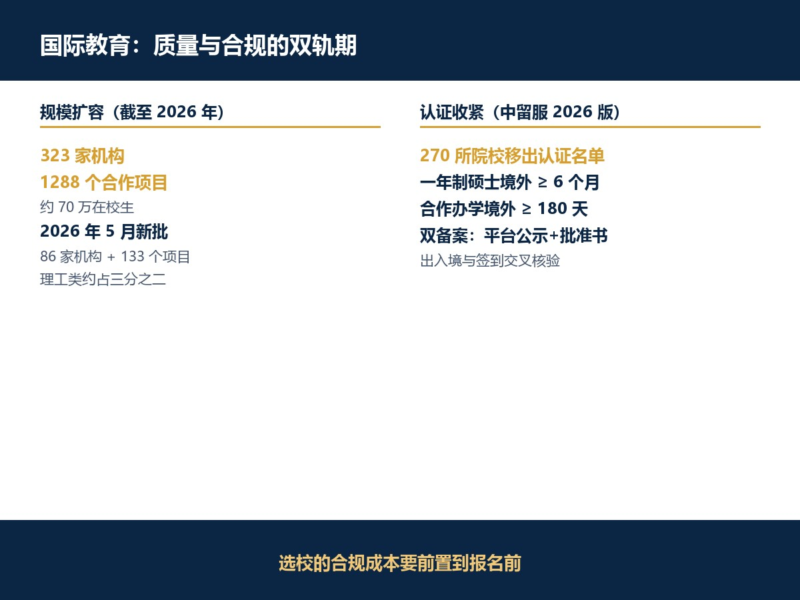

一组方向相反的数据，勾勒出 2026 年国际教育的基本面：一边是中外合作办学加速扩容——截至 2026 年 1 月底，全国共有合作办学机构 323 家、项目 1288 个，在校生约 70 万人；另一边是学历认证明显收紧——中留服新版认证指南移出 270 所海外院校，并对境外学习时长划出硬指标。扩容与收紧同时发生，说明这个行业正在进入质量与合规的双轨期。

一、事实层面：扩容有多大，收紧有多严
先看扩容。据公开统计，截至 2026 年 6 月，本科以上中外合作办学机构和项目总数达 1700 多个。仅 2026 年 5 月，教育部一次性批准 86 家新机构、133 个新项目，涉及 174 所高校，是近二十年来最大规模的一次扩容。新批项目中，本科 100 个、硕士 28 个、博士 5 个，理工类约占三分之二，明显向人工智能、智能制造等对接产业需求的方向集中。
再看收紧。2026 年 3 月发布的新版《国（境）外学历学位认证指南》带来三项关键变化：院校名录年度动态清理，270 所海外院校被移出认证名单；一年制硕士境外实际线下学习累计不少于 6 个月；中外合作办学境外线下累计不少于 180 天。系统会自动调取申请人近 10 年出入境记录，与课程注册、线下签到交叉核验。
双备案也成为硬门槛：项目须同时在教育部中外合作办学监管平台公示备案，并持有官方批准书，未完成"双备案"的项目文凭暂无法受理认证。这一条，直接把"全程国内线上就读即可拿海外学位"的宣传挡在门外。
二、双轨逻辑：一边做增量，一边挤水分
扩容与收紧看似矛盾，实则指向同一个目标：把国际教育资源引向真实、规范、可认证的方向。扩容解决的是"供给不足"——通过引入全球高校资源，满足学生不出国获得国际学位的需求，同时对接本土产业对理工科人才的需要；收紧解决的是"质量参差"——把认证数据异常、办学标准偏差、投诉较多的项目清出市场。
对正规项目而言，这是利好。当认证从"宽进"转向数据穿透，双证或可认证项目在就业、落户、考公中的公信力被进一步坐实。对打擦边球的项目而言，则是一次出清。行业判断很明确：选校的合规成本正在被前置，它应该发生在报名之前，而不是毕业之后。
三、从"拿学位"到"证明价值"
当认证不再天然成立，国际教育的价值证明方式也在变化。过去学生和家长关心的是"能不能拿到海外文凭"，现在更关心三个问题：这个院校在不在认可名单、这个项目能不能认证、这段经历对就业有没有实际帮助。
公开数据反映出这种务实的转向：海归回国求职规模持续上升，但期望月薪与实际起薪之间存在落差；院校层次与就业结果的相关性依然显著。这意味着，"不出国的国际学位"要证明自己，光靠执照不够，还需要更扎实的办学质量与更清晰的就业回报。
对院校来说，压力传导到了办学环节：外方课程与师资是否真正落地、境外段安排是否合规、专业设置是否对接产业、就业服务是否到位，都会成为招生时必须回答的问题。对研究院服务的教育客户而言，把合规校验嵌入项目设计与宣传前置环节，已经是一项基础工作。
四、趋势判断：质量、结构与服务三条主线
其一，扩容会继续，但结构向理工科和产业需求集中。近二十年来最大规模的审批释放出明确信号：合作办学要服务本土产业发展。人工智能、智能制造、数据科学等专业占比上升，是大概率延续的趋势；纯商科、泛管理类项目的增长空间相对有限。
其二，认证将从"结果审核"走向"过程穿透"。随着出入境记录、课程注册、签到数据交叉核验成为常态，项目运营的每一个环节都要经得起追溯。院校需要建立覆盖招生、教学、境外段、毕业的全流程合规体系，而不是在毕业季集中补材料。
其三，区域集群效应将进一步强化。粤港澳大湾区已聚集 11 所中外合作办学机构，依托香港高校资源和产业腹地形成独特优势。随着大湾区教育协同推进，"湾区就读＋港澳或海外段＋大湾区就业"的闭环模式，会成为区域国际教育的重要形态。
其四，中介与服务端监管同步趋严。留学中介自 2026 年 9 月起实行备案管理，取消资格认定、转入事中事后监管。服务机构的竞争焦点，将从信息差转向专业判断与合规能力——能否帮学生识别项目风险、规划合规路径，决定其长期价值。
结语
规模扩容与认证收紧，共同指向国际教育的下一阶段主题：从数量增长转向质量与合规。对院校而言，合规不再是成本，而是公信力的来源；对学生而言，选校的合规成本前置，是避免沉没成本的最好方式。研究院在服务国际教育客户时，把资质核验、质量建设与就业回报评估串成完整链条，比单纯的项目推介更经得起时间检验。
本文所引数据来自公开报道与教育部相关部门公开信息，具体政策以官方发布为准，相关分析为行业趋势研判，不构成报考或投资建议。